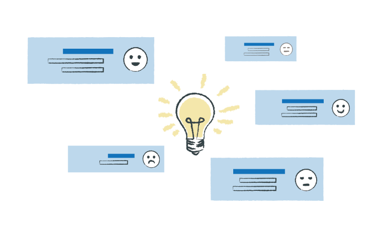
Improve Products and Services
Find recurring needs, complaints, and ideas hidden inside everyday calls.
Mieruka Engine helps contact centers transform stored conversations into product ideas, operational improvements, risk alerts, and executive-ready reports.

Find recurring needs, complaints, and ideas hidden inside everyday calls.
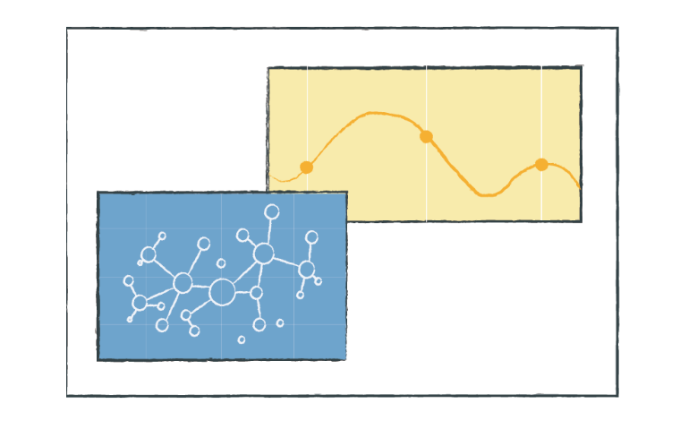
Use AI summaries, classification, and reports to shorten manual review time.
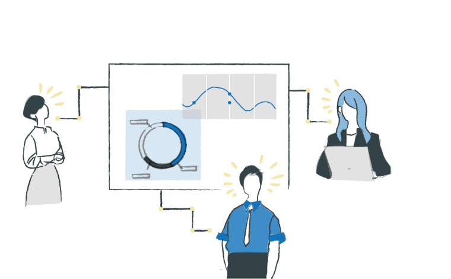
Distribute trends and findings to teams that can act on them quickly.
Text mining SaaS market share leader for 12 consecutive years, with more than 1,600 total deployments.
Solutions
Bring call logs, transcripts, and related customer data together so teams can see trends, reduce after-call work, and respond to risks before they spread.
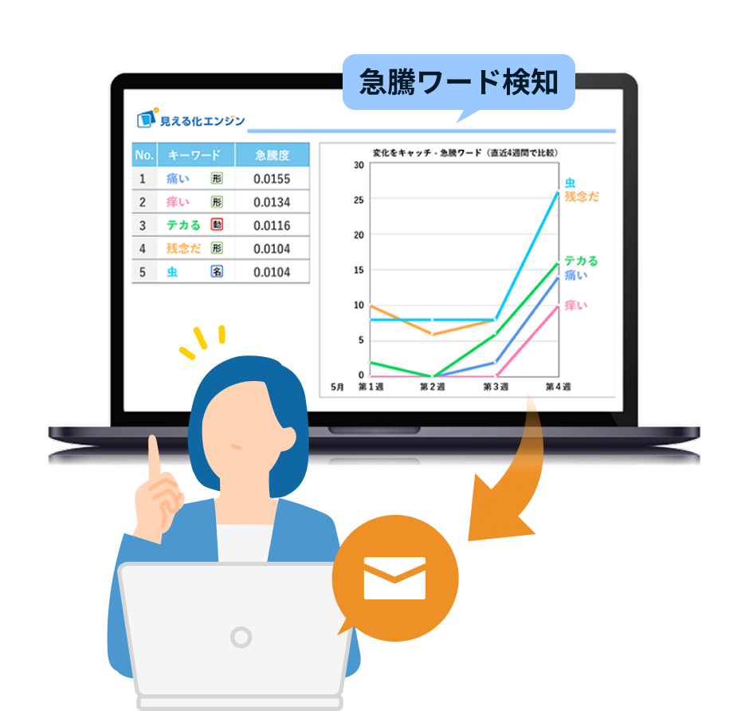
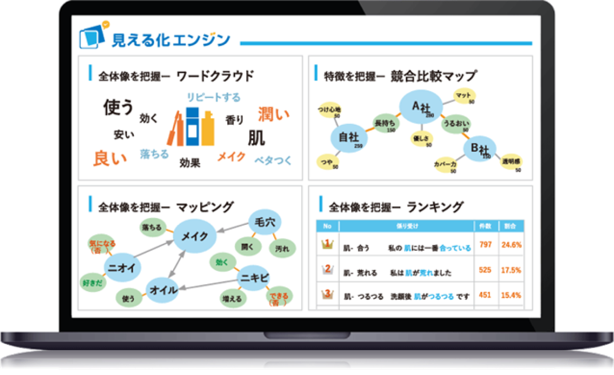
Consultants with experience across industries help you design the right analysis flow and turn insights into action.
Examples of how organizations use customer voice analysis to improve service quality and business decisions.
Used AI-assisted voice-of-customer analysis to support customer satisfaction improvements.
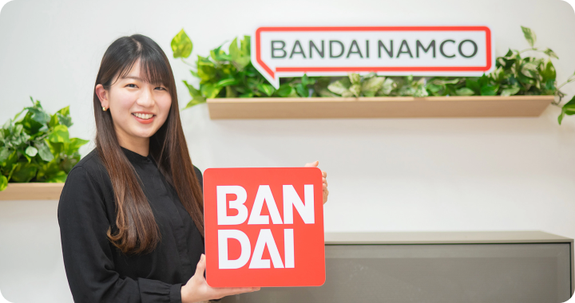
Built an internal portal to monitor inquiry changes and improve Q&A content.
Used customer service insights to strengthen CS activities and frontline action.
From ingestion and classification to AI reporting and alerts, the platform covers the full analysis workflow.
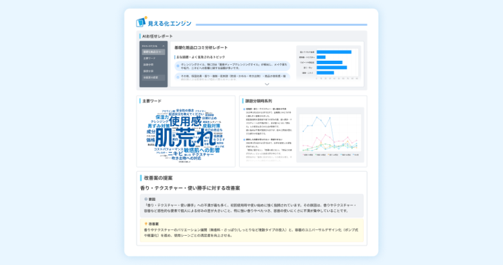
Generate concise reports from imported customer voice data.
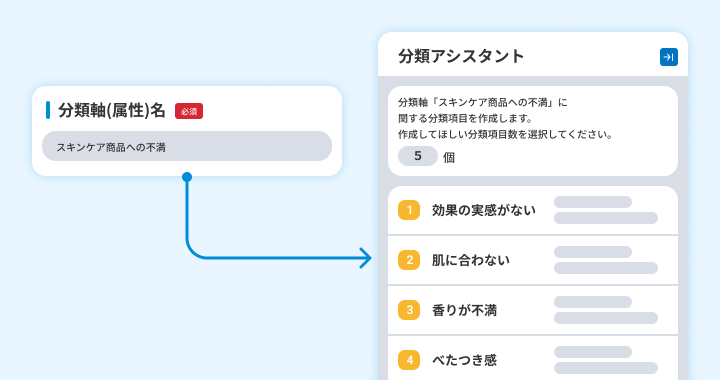
Create categories automatically and understand overall trends faster.
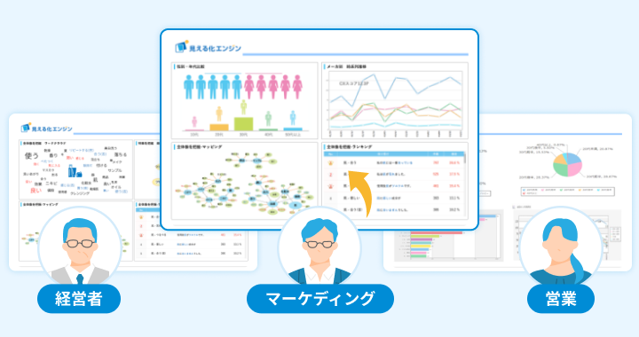
Automate recurring reports tailored to your internal indicators.
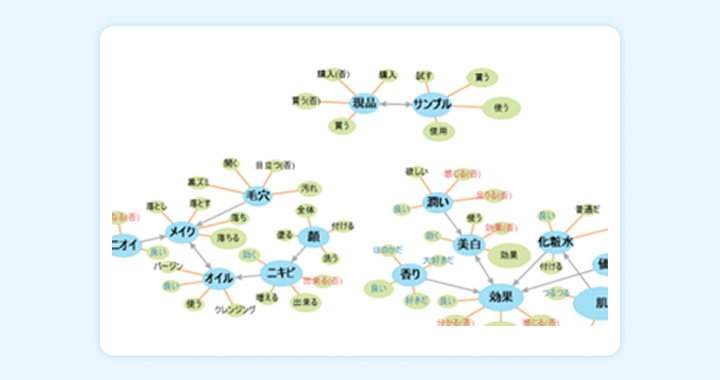
Map and rank conversation topics to see the full landscape.
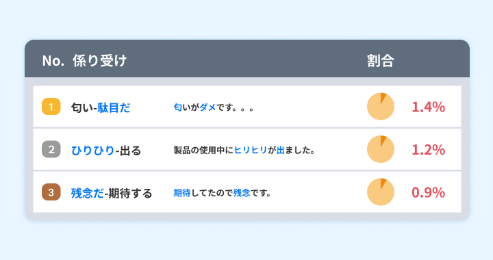
Analyze sentiment and negative comments to find improvement themes.
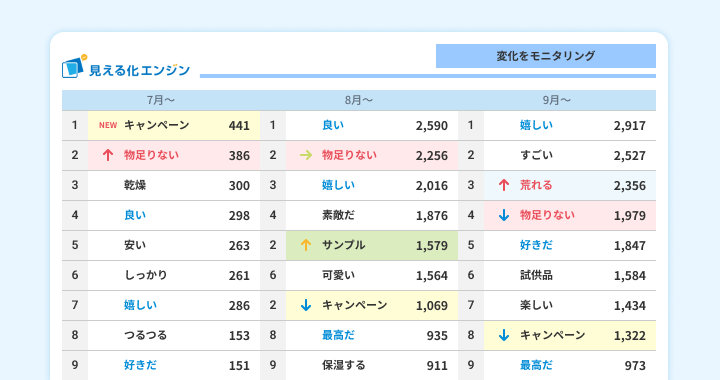
Catch emerging trends through characteristic comments and surging words.
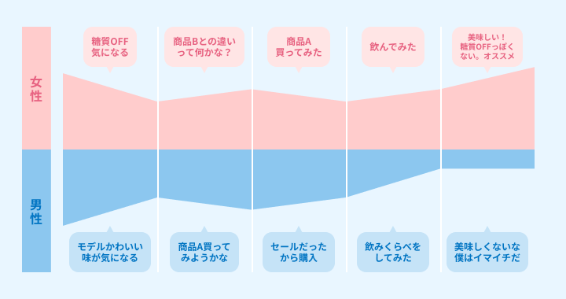
Combine voice data with journey information to find deeper insights.
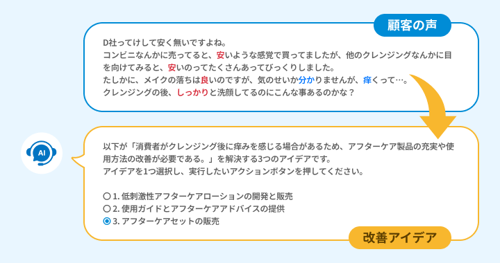
Generate improvement ideas from real customer voices.
Notify responsible teams when risky or harmful events are detected.
From data collection to internal sharing and improvement actions, Mieruka Engine provides an environment for using customer voices from the contact center outward.
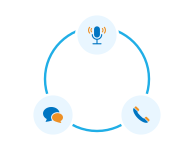
Manage call logs, audio data, and customer voices in one place.
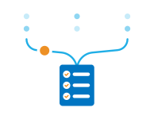
Reduce review work by summarizing large volumes of data.
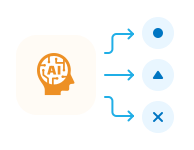
Classify topics by category and quickly confirm trends.
Create reports by team, role, or custom KPI.
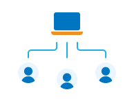
Share insights in time to support improvements and new initiatives.
We propose a practical rollout plan based on your current data, goals, and operational structure.
Our team supports both platform operation and practical use of analysis results.